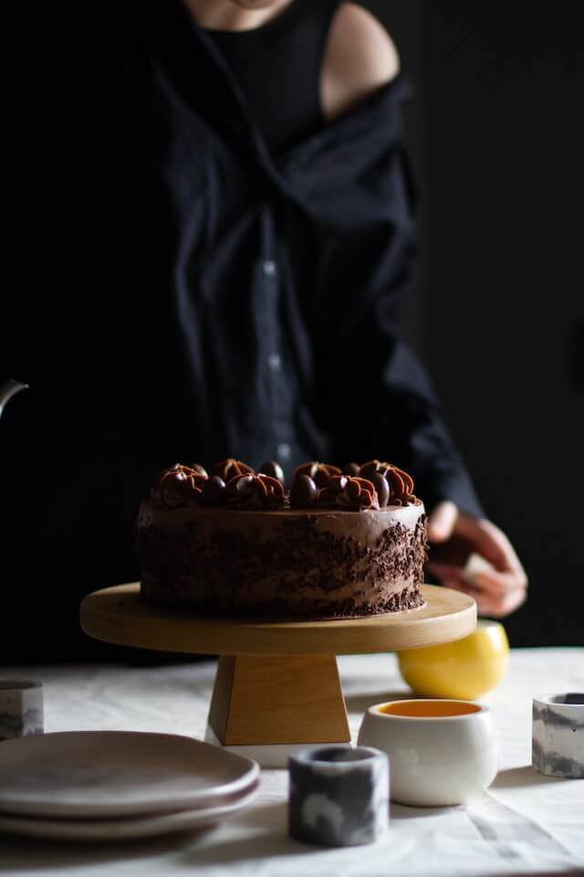

-
1 1/2 tazas de harina para todo uso
1 1/2 tazas de azúcar granulada
1 1/4 tazas de Cacao en Polvo SAVOY®
1 cucharadita de bicarbonato de sodio
1 1/4 cucharadas de polvo para hornear
1/2 cucharadita de sal
2 huevos a temperatura ambiente
3/4 taza de suero de leche a temperatura ambiente
1 taza de NESCAFÉ® Tradición preparado con Leche Semidescremada
SVELTY®
3 cucharadas de aceite de canola
3 cucharaditas de extracto de vainilla
1 taza de mantequilla a temperatura ambiente
4 tazas de azúcar en polvo tamizada
6 cucharadas de Leche Semidescremada SVELTY® preparada
A Cocinar!
Paso 1
1. Precalienta el horno a 350 °F. Engrasa la base de dos moldes para
pasteles redondos de 8 o 9 pulgadas. Forra con un círculo de papel
pergamino o papel encerado. Engrasa el papel pergamino, enharina
ligeramente con un poco de Cacao en Polvo SAVOY®. Saca el exceso.
Paso 2
2. Tamiza la harina, el azúcar granulada, 3/4 taza de Cacao en Polvo
SAVOY®, el bicarbonato, 1 cucharada de polvo para hornear y la sal.
Mezcla los huevos, el suero de leche, el NESCAFÉ® con leche SVELTY®,
el aceite y 1 cucharada de vainilla. Bate a velocidad alta durante 3
min. Vierte la masa de manera uniforme en los moldes preparados.
Paso 3
3. Hornea por 30 min. o hasta que, al insertar un palillo de madera
en el centro, este salga limpio. Enfría en los moldes sobre rejillas
de alambre durante 10 min. Invierte cada capa sobre una rejilla de
alambre; retira el papel de pergamino. Luego invierte con el lado
derecho hacia arriba. Enfría completamente, coloca en el
refrigerador o congelador mientras preparas el glaseado .
Paso 4
4. Bate la mantequilla y 1/2 taza de Cacao en Polvo SAVOY® con 1/4 de
polvo para hornear en un tazón grande hasta que esté cremoso. Agrega
el azúcar en polvo y las 2 cucharaditas de vainilla restantes y bate a
velocidad lenta hasta que se mezclen. Incorpora lentamente la Leche
Semidescremada SVELTY® hasta que esté cremoso.
Paso 5
5. Nivela las tortas si lo deseas con un cuchillo serrado. Coloca
una cucharada de glaseado en el centro de un pedestal de pastel para
que la torta no se resbale. Coloca una capa de torta sobre la
cucharada de glaseado. Unta aprox. 1 taza de glaseado por encima.
Cubre con la segunda capa de torta. Unta la parte superior y los
lados con una fina capa de glaseado. Refrigera por 15 min. Unta con
el glaseado restante y sirve. ¡Disfruta esta torta de chocolate con
glaseado de chocolate!
< >

Aqui abajo encontraras un Video del paso a paso!
torta de chocolate
Quieres mas informacion?
si deseas recibir anuncios de cada receta nueva que subimos? llena este
formulario, para que te podamos conocer mejor! seria de mucha ayuda para
nosotros..
Mas recetas de Chocolate
Bocadillo de platano
Torta de Piña
Torta Mil Hojas
creado por Orianna A. de Del Corral P. Mi primera pagina Web realizada
un 13/junio/2023.
tareas requeridas: hipervinculo - video - imagenes - pagina adaptada
para smarphone, tablet, desktop. - listado, enlace con otras paginas sin
que se salga de tu pagina- bloques contenedores de botones - 2 imagenes
como minimo - una font diferente a la predeterminada .